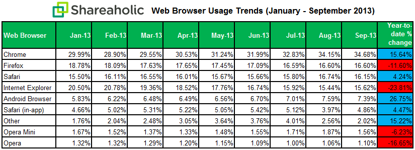
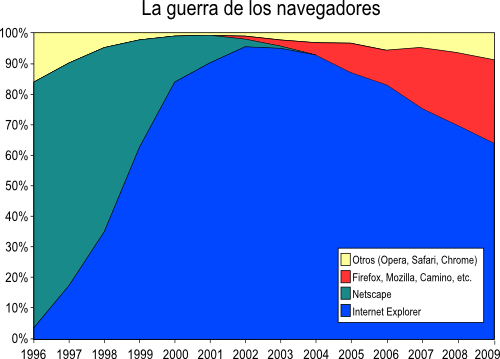
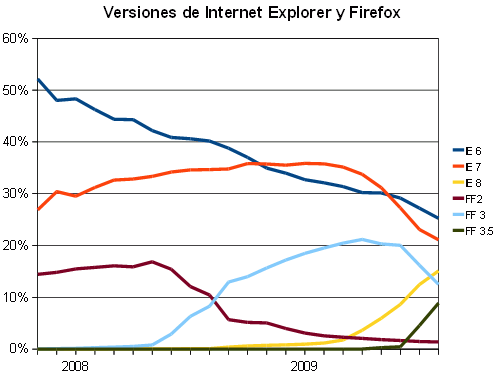

Estado actual

Un nuevo estudio sobre el uso de navegadores web parece dar al traste con el recorrido que hasta ahora se había ido trazando, donde Internet Explorer seguía liderando años después por delante de rivales pujantes como Firefox y Chrome.
Según los datos de Shareaholic para los tres primeros trimestres de 2013, el líder absoluto no es otro que Chrome. Sacaría ventaja a la competencia desde enero hasta septiembre, un mes en el que ha llegado a controlar el 34,68% de la navegación web.
Aunque por la naturaleza descentralizada de la web es difícil obtener estadísticas exactas de utilización de los navegadores y cualquier dato procede de fuentes parciales, existen fuentes de información que ofrecen estadísticas que pueden analizarse.
Historia
El gráfico anterior permite dividir la historia en cuatro fases:
- La primera fase, anterior a 1996 y que no se muestra en el gráfico, corresponde a la primera época de la web, en la que el acceso a la web era muy limitado (hasta 1994 no se permitió el acceso a Internet de los particulares). Durante esos años el navegador dominante era Netscape.
- La segunda fase, desde 1996 a 1999, en la que Microsoft añade Internet Explorer a Windows y eso le permite derrotar a Netscape, que desaparece del mercado.
- La tercera fase, desde 1999 hasta 2004, en la que Internet Explorer monopoliza el mercado, hasta tal punto que ni siquiera necesita sacar nuevas versiones para mantener su dominio.
- La cuarta fase, desde 2004 a la actualidad en que Firefox (y en menor medida otros navegadores como Opera, Safari y Chrome) consigue ir arañando paulatinamente cuota de mercado a Internet Explorer, aunque hayan salido nuevas versiones de IE.
Es importante señalar dos aspectos:
- El números de usuarios de Internet en los últimos 15 años probablemente se ha multiplicado por siete, por lo que los cambios lógicamente son ahora mucho más lentos.
- Durante todo este tiempo Windows ha sido el sistema operativo más utilizado y ha incluido siempre Internet Explorer, lo que concede una ventaja muy grande a este navegador.
Situación
Los datos detallados de uso de cada versión de navegador (IE y FF) también son interesantes:
- Internet Explorer 6 va reduciendo paulatinamente su cuota de mercado, probablemente a medida que se van sustituyendo los ordenadores antiguos. En un par de años, seguramente será irrelevante.
- Internet Explorer 7 llegó a superar a IE6, pero desde la salida de IE8 tiende a desaparecer más rápidamente que IE6 (probablemente porque los usuarios sí que se actualizan de IE7 a IE8).
- Internet Explorer 8 está todavía en subida, aunque menos de lo que bajan IE6 e IE7.
- Las nuevas versiones de Firefox sustituyen más rápidamente a las antiguas: Firefox 3 sustituyó en un año a FF2 y Firefox 3.5 está sustituyendo rápidamente a FF 3.
- Si las tendencias indicadas en este gráfico continuan, parece que a finales de 2009 el mercado de los navegadores estará más fragmentado que nunca, con cuatro navegadores con un 20% de cuota. Pero a mediados de 2010, IE8 y FF3.5 dominarán claramente el mercado (en una proporción de 2 a 1).
Ultimos años
La web vivió unos primeros años frenéticos gracias a la competencia entre Netscape e Internet Explorer. Los años de dominio absoluto de Internet Explorer fueron años de estancamiento de la web (desde el punto de vista técnico, no en cuanto a cantidad de contenidos). La competencia actual entre Firefox e Internet Explorer está provocando nuevas innovaciones técnicas que pronto disfrutaremos.
Aunque el tamaño del mercado ralentiza los cambios y el dominio de Windows como sistema operativo da a Internet Explorer una ventaja inmensa, la competencia en la web ha vuelto. Todos saldremos ganado.